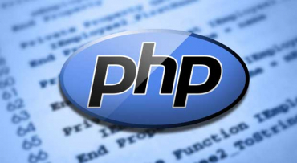
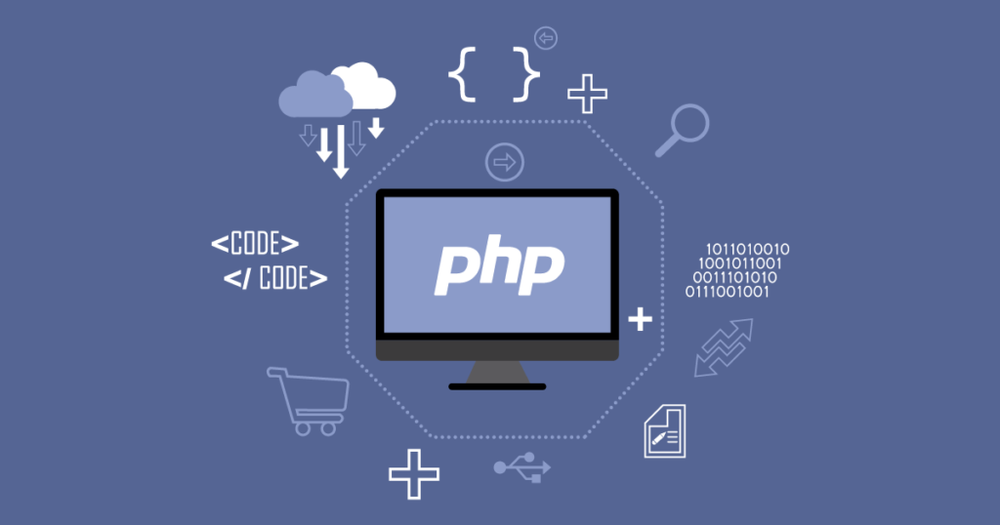
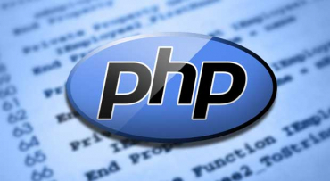
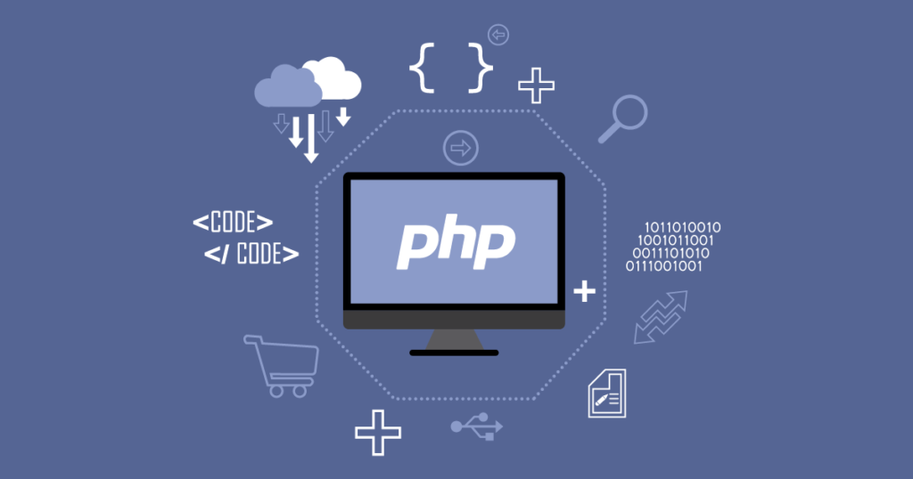

Unda qanaqa dastur tuzish kerak deb o'ylaysiz. Masalan siz oddiy hisob kitob qiluvchi dasturning kompyuter uchun C++ yozdingiz va huddi shu dasturni PHPda yozib chiqdingiz. Endi shu dasturni do'stingizga foydalanishni tavsiya qilsangiz, do'stingiz nima qiladi? Albatta o'sha PHPda yozilgan dasturni ishlatib ko'radi. U oddiygina mobil telefoni yoki planshetidan o'sha dastur joylashtirilgan saytga kirib ko'radi va albatta bu dasturingizdan qoyil qo'ladi :) Yani dastur foydalanish qulay bo'lgan platformaga tuzish kerak. Ayni paytda web sayt va mobil telefonlar foydalanish hamma uchun qulay. Masalan hozir internet juda rivojlanib, foydalanish esa qulaylashib bormoqda. Demak kelajakda internet bundan ham rivojlanib ketadi. Shuning uchun internetga dastur ya'ni Web App yozish kerak. Bunda esa bizga PHP yordam beradi.